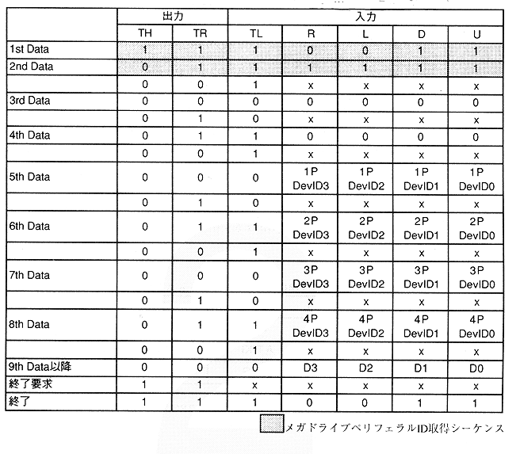

In Table 3.31, 1P to 4P DevID indicates the ID of the peripheral connected to SEGATAP. Peripherals that can be connected to Sega Tap are Mega Drive 3 Button PAD, Mega Drive 6 Button PAD, and Sega Mouse. Table 3.32 shows the connected devices and IDs.
Table 3.32 Connection peripherals and IDs
ID | Peripheral name |
0H | Megadrive 3 button PAD |
1H | Megadrive button PAD |
2H | Sega Mouse |
FH | Not connected or indistinguishable |
After 9th Data in Table 3.31, the data of the device connected to bits D3 to D0 follows. The data format of each device is shown below.